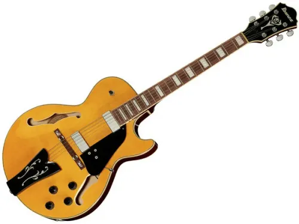

Le chitarre elettriche hollow body ("corpo vuoto/cavo") o semiacustiche presentano una parte o la totalità del corpo vuota, con uno o due tradizionali fori di risonanza a forma di f posti ai lati delle corde, similmente ai fori presenti su altri strumenti a corda, come il violino.
Le chitarre a cassa parzialmente piena hanno trovato terreno fertile nel rock and roll e nel blues.